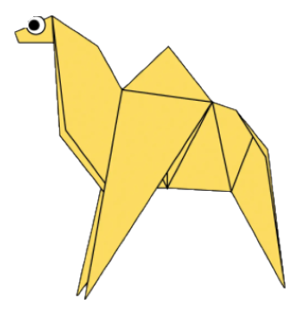
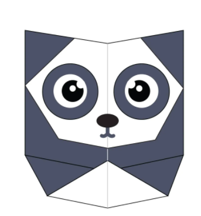
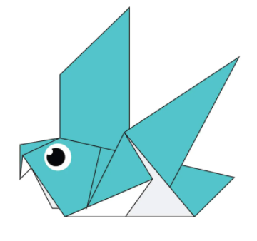
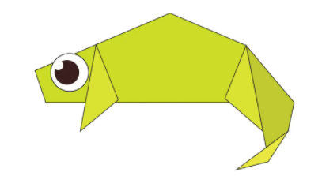

Origami Designs
These are some designs:
INTERESTING FACTS ABOUT CAMEL
- There are two types of camels: One humped or “dromedary” camels and two humped Bactrian camels.
- Camels have three sets of eyelids and two rows of eyelashes to keep sand out of their eyes.
- Camels have thick lips which let them forage for thorny plants other animals can't eat.

INTERESTING FACTS ABOUT PANDA
- Giant pandas are good at climbing trees and can also swim.
- Pandas have so many fans because they look cute.
- A giant panda is much bigger than your teddy bear.

INTERESTING FACTS ABOUT PIGEON
- Pigeons are incredibly complex and intelligent animals.
- They can also recognise each letter of the human alphabet,
differentiate between photographs, and even distinguish different humans within a photograph.
- Pigeons are renowned for their outstanding navigational abilities.
- Pigeons are highly sociable animals. They will often be seen in flocks of 20-30 birds.

INTERESTING FACTS ABOUT CHAMELEON
- Chameleons are reptiles that are part of the iquana suborder
- Changing skin color is an important part of communication among Chameleons
- Most chameleons have a prehensiletail that they use to wrap around tree branches
